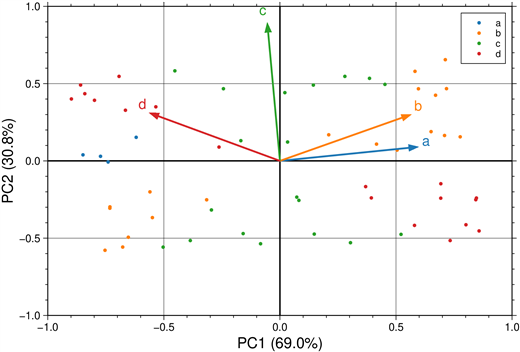
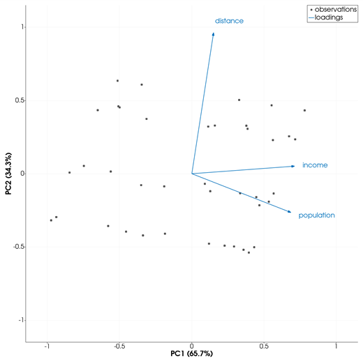
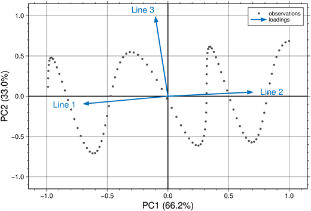

biplot — Principal Component Biplot
The biplot icon on the X,Y Plot tool's gallery row runs a principal component analysis of the series of the current page and draws its biplot: every observation as a point at its scores on the first two principal components, and every variable as an arrow, its coefficients (loadings) on them. The biplot goes on a new page; the series it was made from stay as they were. It follows GMT.jl's biplot, with its zscores and pca.
Syntax
Draw one series per variable, then click biplot:
p = plot(x, v1; legend="name1")
plot!(p, x, v2; legend="name2") # more variables: one per series
p = plot(D; multicol=true) # a table: one variable per column after the firstDescription
- Each series of the page is one variable; only its Y values are used. A series with fewer than two values is left out. There must be two or more variables.
- The observations are the rows of the variables put side by side: the series are cut to the length of the shortest one, and a row with any value that is not finite is left out.
- Each variable is first standardized to a mean of 0 and a standard deviation of 1 (GMT.jl's
zscores), so variables in different units weigh the same; then the principal components are computed (GMT.jl'spca). - Arrows: one per variable, from the origin to its coefficients on the first (X) and second (Y) principal component, labelled with the variable's name (the series' name).
- Points: one per observation, at its scores on the same two components. The scores are scaled so the largest of them, in absolute value on either component, equals the length of the longest arrow.
- The sign of each component is chosen so that its largest coefficient is positive, as GMT.jl's
biplotdoes. - Unlike the other plot types that draw their own frame, the page keeps its X,Y axes: X is titled
PC1 (<p>%)and YPC2 (<p>%), with the percentage of the total variance each component explains. The limits are symmetric about 0, rounded to round numbers and widened by 15 % so the arrow names stay inside; the page is square. - In the Object Manager the points are one row,
observations, and the arrows another,loadings.
Running the Examples
Paste each example into the iGMT window's Julia console, or into the Julia REPL after using InteractiveGMT, then click biplot on the gallery row. The icon uses every series of the page, so no series needs to be selected.
Examples
Create Biplot
Four variables of 60 observations, built from two underlying signals, f and g: a and b follow f, c follows g, and d mixes both.
k = 1:60
f = sin.(0.3 .* k)
g = cos.(0.7 .* k)
a = f .+ 0.1 .* cos.(2.1 .* k)
b = 0.8 .* f .+ 0.2 .* g
c = g .+ 0.1 .* sin.(1.9 .* k)
d = 0.5 .* g .- f
D = mat2ds([k a b c d], colnames=["obs", "a", "b", "c", "d"])
p = plot(D; multicol=true)
Variables in Different Units
The variables are standardized first, so a variable measured in thousands does not outweigh one measured in units.
x = 1:40
p = plot(x, 1000 .+ 300 .* sin.(0.2 .* x); legend="population")
plot!(p, x, 20 .+ 3 .* sin.(0.2 .* x) .+ cos.(0.9 .* x); legend="income")
plot!(p, x, 5 .+ 2 .* cos.(0.9 .* x); legend="distance")
Biplot from a Matrix
A matrix whose first column is X: with multicol=true each further column is a variable, here Line 1 to Line 3.
t = 0:0.1:10
M = [t t .+ sin.(t) 10 .- t cos.(2 .* t)]
p = plot(M; multicol=true)
Input Arguments
v1, v2, ... — the variables, the Y values of the series of the page, one series per variable; the values at the same position form one observation.
See Also
parallelplot — Parallel Coordinates Plot · cornerplot — Corner Plot · plot — 2-D Line Plot · X,Y Plot Tool